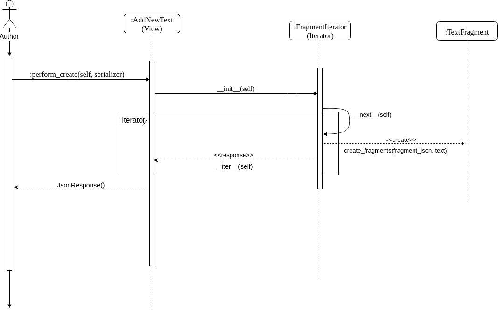
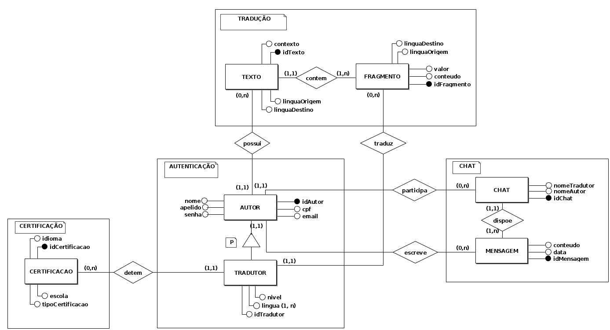
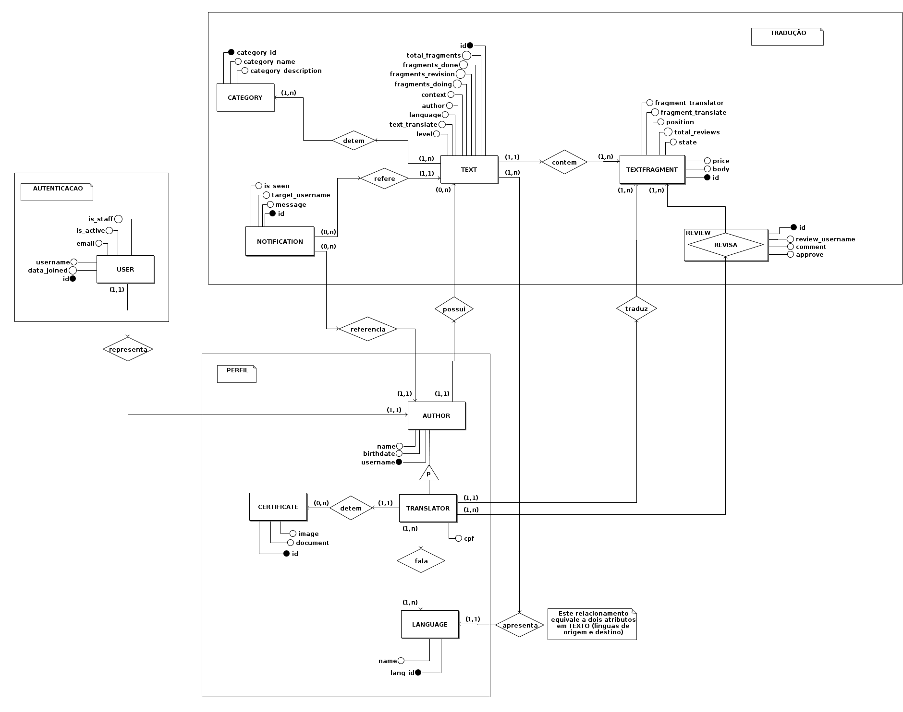
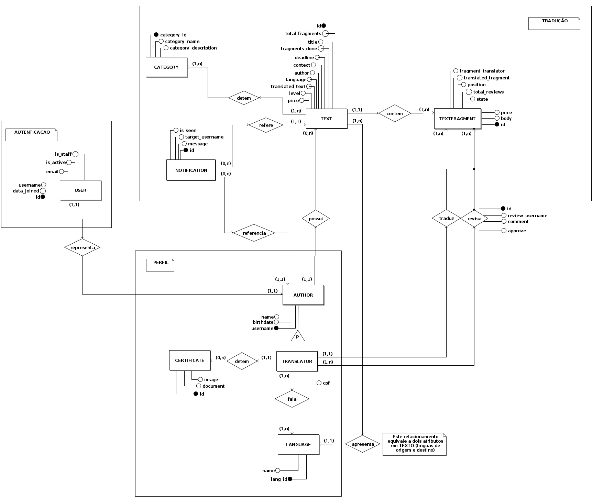

Documento de Arquitetura
Histórico de Revisão:
| Data | Versão | Descrição | Autor |
|---|---|---|---|
| 31/03/2019 | 0.1 | Adicionando o Template do documento de arquitetura | Victor Hugo |
| 01/04/2019 | 0.2 | Modificando Template para preenchimento | Alexandre Miguel |
| 09/04/2019 | 0.3 | Adicionando Definições, Acrônimos e Abreviações | Letícia Meneses |
| 09/04/2019 | 0.4 | Adicionando Introdução e Requisitos e Restrições arquiteturais | Gabriela Guedes |
| 10/04/2019 | 0.5 | Adicionando informações de Dimensionamento e Performance e de Qualidade | Alexandre Miguel |
| 11/04/2019 | 0.6 | Adicionando escopo do projeto | Helena Goulart |
| 11/04/2019 | 0.7 | Adicionando Diagrama de Classes | Rômulo Souza |
| 11/04/2019 | 0.8 | Adicionando o diagrama de implementação | Victor Hugo |
| 11/04/2019 | 0.9 | Adicionando finalidade do documento | João Robson |
| 22/04/2019 | 0.9.1 | Revisando e Adicionando Descrições de Tópicos | Alexandre Miguel |
| 27/04/2019 | 1.0 | Adicionando informações do Banco de Dados | Alexandre Miguel e Rômulo Souza |
| 15/06/2019 | 1.1 | Adicionando segunda versão do diagrama de classes | Letícia Meneses e Gabriela Guedes |
| 16/06/2019 | 1.2 | Adicionado sub tópicos em visão geral de camadas e pacotes | Davi Alves |
| 23/06/2019 | 1.3 | Adicionado nova versão do diagrama de micro serviços | Victor Hugo |
| 23/06/2019 | 1.4 | Adicionado nova versão do diagrama de implementação e ajustando erros de ortografia | Victor Hugo |
| 23/06/2019 | 1.5 | Adicionado análise do GQM | Gabriela Guedes e Helena Goulart |
| 23/06/2019 | 1.6 | Adicionado novo diagrama de pacotes e subtopicos em visão geral de camadas e pacotes | Davi Alves |
| 23/06/2019 | 1.7 | Adicionando versões 2 e 3 do ME-R e DE-R na visão de dados | Alexandre Miguel e Rômulo Souza |
| 23/06/2019 | 1.8 | Adicionando a quarta versão do Diagrama Entidade-Relacionamento | Alexandre Miguel |
| 23/06/2019 | 1.9 | Adicionando diagrama de sequência do autor | Letícia Meneses |
| 30/06/2019 | 2.0 | Adicionando versão 3 do diagramade classes e de sequenciaas de padrões aplicados | Letícia Meneses |
| 01/07/2019 | 2.1 | Adicionando versão 5 do ME-R e DE-R | Rômulo Souza |
Objetivo do Documento
Este documento tem como objetivo descrever e caracterizar as decisões arquiteturais do projeto Translate.me . A caraterização será feita com enfoque no âmbito do software, não levando em conta medições como de desempenho.
1. Introdução
Este documento visa apresentar a arquitetura de software a ser aplicada no sistema do Translate.me , de forma que facilite a visualização dos requisitos e da estrutura para os envolvidos.
1.1. Finalidade
Este documento apresenta os aspectos arquiteturais do projeto, exibindo como se dará a integração entre os micros serviços que compõem o Back-end e o Front-end . Dessa forma, ele é composto não só de diagramas e abordagens abstratas, mas também de uma visão que trata das tecnologias envolvidas na elaboração do projeto e da forma na qual esses elementos serão incorporados para se obter os requisitos funcionais e não funcionais propostos.
1.2. Escopo
Este documento de arquitetura se aplica ao Translate.me , aplicação desenvolvida na disciplina Arquitetura e Desenho de Software.
1.3. Definições, Acrônimos e Abreviações
UnB - Universidade de Brasília
FGA - Faculdade do Gama
Translate.me - WebApp com finalidade em tradução de textos, ligando tradutor e cliente.
Backend - Parte da aplicação responsável pelo gerenciamento de recursos a serem utilizados no Frontend.
Frontend - Parte da aplicação responsável pelo contato com o usuário, consumindo recursos do Backend.
1.4. Referências
Lino - Documentação de arquitetura do projeto de Bot em desenvolvimento na FGA
Design Patterns - Padrões de Design aplicados ao desenvolvimento de software
Academia Brasileira de Ciências
American Journal Express ME-R e DE-R - Definição de Aspectos do Modelo Entidade - Relacionamento e Diagramação associada
Notação do Modelo Entidade-Relacionamento - Notações utilizadas na descrição e diagramação do Modelo Entidade Relacionamento
ELMASRI, R. e NAVATHE, S. B., Sistema de Banco de Dados, 4ª edição, 2005.
2. Representação Arquitetural
Modelo de representação dos serviços implementados e as interações estabelecidas entre esses serviços, bem como a natureza dessas interações.
2.1 Diagrama de arquitetura
Versão 1

versão 2
 OBS: Foi visto a necessidade de mudar a arquitetura do projeto, pois descartamos a parte de chat dentro do escopo da disciplina
e para aumentar a reutilização de alguns do serviços para vários tipos de projeto foi necessário que o serviço de autenticação fosse
separado em dois micro serviços. Em que o serviço de profile é responsável pelos tipos de perfis que terão na aplicação e o authentication
é responsável pela parte de usuário, senha e token dentro das aplicações.
OBS: Foi visto a necessidade de mudar a arquitetura do projeto, pois descartamos a parte de chat dentro do escopo da disciplina
e para aumentar a reutilização de alguns do serviços para vários tipos de projeto foi necessário que o serviço de autenticação fosse
separado em dois micro serviços. Em que o serviço de profile é responsável pelos tipos de perfis que terão na aplicação e o authentication
é responsável pela parte de usuário, senha e token dentro das aplicações.
Papeis:
-
React: responsável pela parte do frontend da aplicação.
-
Translate: responsável pela parte de manipulação dos textos, fragmentos, traduções e revisões dentro da aplicação.
-
Payment: responsável pela parte de repasse do dinheiro da carteira virtual do autor do texto para o tradutor do texto.
-
Authentication: responsável pela parte de autentificação dentro da aplicação bem como cadastro de usuário, senha e atribuição de token de autenticação para o usuário em questão.
-
Profile: responsável por cadastro dos tipos de perfis dentro da aplicação, sendo esses tradutor e autor.
3. Requisitos e Restrições Arquiteturais
| Requisito | Solução |
|---|---|
| Linguagem | O front-end será feito em JavaScript e o back-end, em Python. |
| Plataforma | Serão usadas as plataformas ReactJS para o front-end e Django para o back-end. |
| Segurança | É necessário uma segurança para com os dados, pois todos os usuários irão interagir de forma anônima. Para uma maior segurança das informações, será necessário a utilização de token nas requisições. |
| Persistência | O sistema lidará com uma quantidade grande de dados (informações de usuário e textos em tradução), que para um bom funcionamento do sistema não podem ser perdidos, para a persistência destes dados será utilizado um banco de dados relacional PostgreSQL . |
| Arquitetura | Será feita uma arquitetura de microsserviços, para um melhor funcionamento e desempenho do sistema, já que não serão dependentes entre si |
4. Visão Lógica
Modelagens conforme padrão UML que representam os aspectos arquiteturais do sistema, como as classes utilizadas, as camadas e pacotes da aplicação e a visão da implementação de cada serviço.
4.1 Diagrama de Classes
Versão 1.0

Versão 2.0

Versão 3.0

Versão 4.0

4.2. Visão Geral de Camadas e Pacotes
Versão 1.0

Versão 2.0


4.2.1 Camada UI
React - Biblioteca JavaScript que leva consigo outros 3 pacotes que são:
- Redux - Facilitador da comunicação entre componentes sem acoplá-los.
- Telas - Telas propriamente ditas onde o usuario estará interagindo, ela depende do redux e dos componentes.
- Componentes - Os componentes permitem que você divida sua interface em partes independentes e reutilizáveis, e que você pense em cada parte de forma isolada.
4.2.2 Camada Back-End
Django - Framework Web que segue o padrão arquitetural model-template-view que possui os pacotes:
-
Autenticação - Manipula contas de usuário, grupos, permissões e sessões de usuário.
-
Login - Possui todas as funções de autenticador de usuario e depende do cadastro.
-
Cadastro - Possui funções para criação de novos usuarios.
-
Usuário - Possui uma generalização de tipos de usuário
- Autor - Responsavel por submeter o texto para tradução
- Tradutor - Responsavel por traduzir o texto submetido
-
Revisor - Responsavel por revisar o texto que ja foi traduzido e ainda dar feedbaks para o autor.
-
Serviços Translate-me
-
Submissão - Possui todas funções para que o usuario possa submeter o seu texto para a tradução. Ela depende diretamente da autenticação.
- Tradução - Possui todas as funções relacionadas a tradução que sera feita por um tipo especifico de usuario. Ela depende diretamente da autenticação.
- Revisão - Possui todas as funções para que o revisor possa revisar e gerar os feedbacks de como estáo texto.
- Pagamento - Possui todas as funções relacionadas ao pagamento que será efetuado e também recebido, dependente da autenticação.
- Gamificação - Possui funções para melhoria de interação do usuario e depende apenas do pacote tradução.
4.2.3 Base de Dados
Base de Dados - O pacote Base de dados inclui todas funções necessarias para suportar o armazenamento dos dados.
4.3 Diagrama de Sequência
O diagrama de sequência tem por finalidade demonstrar a sequência das mensagens entre objetos em uma interação.
4.3.1 Adiconar um Texto (Autor)

4.3.2 Adicionar um Texto - Visão do Padrão Iterator

4.3.3 Adicionar um Texto - Visão do Padrão Composite

5. Visão de implementação
5.1 Diagrama de implementação
Diagrama de implementação serve para dar uma visão de como seria implementado em hardware a arquitetura proposta. Visto que nela é possível ver a quantidade de servidores e/ou serviços por servidores , máquinas pessoais e protocolos de comunicação.
Versão 1

Versão 2
 OBS: Foi retirada a parte de chat da aplicação visto que por conta do tempo e da complexidade que levaria para implementar esse micro serviço não daria para entregar no escopo da matéria.
OBS: Foi retirada a parte de chat da aplicação visto que por conta do tempo e da complexidade que levaria para implementar esse micro serviço não daria para entregar no escopo da matéria.
6. Dimensionamento e Desempenho
Seção responsável pela estimativa em valores quantizados do desempenho dos módulos da arquitetura, bem como de sua desempenho em execução, conforme a análise qualitativa estabelecida no Documento de Requisitos Não Funcionais.
6.1. Volume
O sistema deve permitir que o fluxo de usuários de ambos os tipos tenham acesso a aplicação e suas funcionalidades. Os usuários autores somente usam a plataforma para submeter um novo texto ou acompanhar o status de um texto enviado, é um uso baixo e inconstante desta. Já os usuários tradutores, representam maior tempo de atividade e um acesso constante ao sistema.
Para dimensionar o volume de utilização do software faremos uma estimativa mantendo como foco a produção acadêmica realizada na Universidade de Brasília, visto que nosso software inicialmente será direcionado ao público desta. De acordo com a própria UnB, utilizando dados do SciVal, um software desenvolvido pela editora científica Elsevier para a gestão estratégica da pesquisa, cerca de 2000 artigos foram adicionados a base científica Scopus no ano de 2016, considerando a crescente da produção científica vista nos anos de 2011 a 2016 na UnB, podemos estimar que a Universidade atualmente adiciona cerca de 2500 a 3000 artigos na Scopus anualmente.
Através da análise dos prazos de plataformas concorrentes, consideramos que os tradutores levam em torno de duas semanas para traduzir e revisar um artigo contendo até 15 páginas. Na plataforma proposta os prazos se mantém, visto que não há alteração na produtividade dos tradutores.
Através dos dados acima referentes a produtividade dos tradutores e número de artigos produzidos pela UnB, podemos concluir que para manter a plataforma funcionando corretamente serão necessários no mínimo 200 tradutores. É possível chegar a esse resultado obtendo a média de artigos produzidos a cada duas semanas (=~100), multiplicado pelo número de envolvidos em cada tradução (2 - Tradutor e Revisor), reiterando que é possível obter essa estimativa pois a produtividade dos tradutores/revisores não muda na nossa plataforma, comparada as demais concorrentes.
É possível fazer um escalonamento destes dados para englobar a produção científica em contexto nacional, de forma que seria necessária a busca por novos tradutores, para que seja possível atender a demanda crescente.
6.2. Desempenho
Para o correto funcionamento do sistema, o desempenho deve ser rápida e com a conclusão de funcionalidades como o upload de textos em até 1 minuto, para textos com mais de 200 páginas, bem como respostas eficientes da utilização de sistemas como a separação de fragmentos e o envio do texto para tradução.
7. Qualidade
Os seguintes itens conferem ao sistema aspectos de qualidade, bem como a descrição da abordagem realizada para satisfazer esses aspectos.
| Item | Solução | Descrição |
|---|---|---|
| Escalabilidade | Arquitetura de Micros serviços | Em prol de permitir que o sistema evolua sem grandes gargalos, o sistema de modularização aplicado pela arquitetura de micros serviços propicia alterações no funcionamento de um serviço sem alterações em grande escala nos demais serviços relacionados, permitindo modificações mais pontuais e uma integração facilitada do sistema. |
| Confiabilidade | Manutenção Periódica e Modularização do Sistema | Pela modularização do sistema permitir menor impacto de um micros serviço no funcionamento de outro, a prática de manutenções periódicas permite a solução de problemas de forma pontual e sem impedir o funcionamento de demais serviços, ao contrário de abordagens monolíticas |
| Segurança | Encriptação de dados e Servidor Remoto | Para garantir a segurança de informações sensíveis, a abordagem utilizada será a encriptação de dados e utilização de Hashes, permitindo que informações puras não trafeguem por mais módulos da aplicação do que o necessário, armazenando-as no servidor remoto e acessando-as por meio das hashes. |
| Portabilidade | Arquitetura de Micros serviços | A Utilização da arquitetura de micros serviços permite o desenvolvimento do Backend da aplicação desacoplado do Frontend, permitindo então que esse Frontend seja adaptado para diferentes plataformas, com um funcionamento equivalente conforme o que foi implementado no Backend, contando ainda com a independência de funcionamento de cada serviço. |
7.1 GQM
A equipe do translate.me desenvolveu o GQM baseado no desenvolvimento do projeto e na ementa da disciplina Arquitetura e Desenho de Software. Este tópico baseia-se na análise do cumprimento das métricas estabelecidas pelo GQM. É importante ressalta que o grupo não se encontra na última sprint do projeto, logo, é possível que os resultados se alterem até conclusão do translate.me.
Métrica 1.0: Detalhamento dos padrões de projetos utilizados e suas limitações.
Os padrões de projeto utilizados até a data deste documento foram:
-
O padrão Observer foi utilizado nas notificações para o usuário. A dificuldade ocorreu devido às limitações do banco de dados do Django;
-
O Composite foi utilizado no banco de dados. Houve dificuldades na implementação do padrão, uma vez que não havia implementação na documentação do Django;
-
O Facade foi aplicado na parte de fragmentação do texto, e não apresentou muitas dificuldades uma vez que a definição do padrão de projeto Facade assemelha-se bastante ao translate.me;
-
O Module foi aplicado em grande parte do projeto e com simples implementação;
-
Os padrões Proxy e Adapter estão presentes no projeto por serem padrão do framework Django.
A métrica responde a pergunta: Quais padrões de projeto foram utilizados?
Sim. Apesar de não ter uma documentação detalhando onde cada padrão foi aplicado, a equipe preocupou-se em aplicar os padrões de projeto no translate.me e os membros sabiam pontuar onde, como e porque cada padrão foi aplicado e listar as dificuldades encontradas.
Métrica 1.1: Comparativo entre o padrão de projeto utilizado e o que foi definido que o grupo aplicará.
Não foi estabelecido pela equipe quais padrões poderiam ser utilizados, contudo foi feita um estudo sobre cada padrão de projeto, incluindo a sua aplicabilidade no translate.me. Os seguintes padrões foram categorizados como aplicáveis:
- Decorator
- Facade
- Bridge
- Composite
- Factory Method
- Abstract Factory
- Singleton
- Mediator
- Observer
- Command
- Iterator
- Interpreter
Conforme citado na metrica anterior, dos padrões de projeto aplicaveis, 3 foram utilizados no projeto. Outros 3 padrões de projeto foram aplicados, mesmo não tendo sido listados anteriormente.
A métrica responde a pergunta: A equipe aplicou os padrões de projeto que se propôs a utilizar?
A equipe não se comprometeu em aplicar padrões específicos, dessa forma, a lista de padrões aplicaveis foi parcialmente implementada.
Objetivo de equipe 1.0 - Analisar o processo de desenvolvimento de software
O objetivo foi atingido, em virtude dos pontos citados nas metricas 1.0 e 1.1.
Métrica 2.0: Apresentar detalhamento dos riscos do projeto
Os riscos foram pontuados e detalhados pela equipe anteriormente no Termo de Abertura do Projeto, contudo foram detalhados novos riscos para incrementar cumprimento desta metrica. Para acessar o documento que contém outros riscos do projeto, basta clicar aqui.
A métrica responde a pergunta: A equipe possui ciência dos riscos do projeto? Sim, uma vez que o documento foi criado para cumprir parte da métrica e que outros riscos foram pontuados no TAP. As reuniões semanais também possibilitaram que a equipe conversasse sobre esses riscos mesmo que os problemas presentes e que poderiam surgir não fossem nomeados de riscos do projeto.
Métrica 2.1: Acompanhamento semanal dos riscos
Em toda reunião de sprint foi feito um levantamento do que foi positivo e negativo durante aquele periodo de trabalho e melhorias a serem feitas. Dessa forma, foi possivel acompanhar os riscos do projeto semanalmente.
A métrica responde a pergunta: Os riscos estão sob controle?
Sim. Tendo em vista que foi feito um acompanhamento semanal dos riscos, eles estavam sob controle.
Objetivo de equipe 2.0 - Analisar os riscos do projeto
O objetivo foi atingido, uma vez que os riscos foram analisados.
8. Visão de Dados
8.1. Modelo Entidade - Relacionamento (ME-R)
Dada a arquitetura do projeto, modularizada por microsserviços, as entidades se referem ao que será requerido e utilizado em cada módulo
8.1.1. Entidades e Atributos
8.1.1.1. Versão 1
| Serviço | Entidades e Atributos |
|---|---|
| Certificação | - CERTIFICACAO (idCertificacao , idioma, escola, tipoCertificacao) |
| Autenticação | - AUTOR (idAutor , cpf, nome, apelido, email, senha) - TRADUTOR (idAutor, idTradutor , cpf, nome, apelido, email, senha, nivel, {lingua}) |
| Tradução | - TEXTO (idTexto , contexto, linguaOrigem , linguaDestino) - FRAGMENTO (idFragmento , contexto, linguaOrigem , linguaDestino, conteudo, valor) |
| Chat | - CHAT (idChat , apelidoTradutor, apelidoAutor) - FRAGMENTO (idMessage , conteudo, data) |
8.1.1.2. Versão 2
| Serviço | Entidades e Atributos |
|---|---|
| Perfil | - CERTIFICACAO (idCertificacao , idioma, escola, tipoCertificacao) - AUTOR (idAutor, nome, apelido, dataNascimento) - TRADUTOR (idTradutor, idAutor, cpf, nivel) |
| Autenticação | - USUARIO (idUsuario, username, email, senha) |
| Tradução | - TEXTO (idTexto , contexto, totalFragmentos, fragmentosFinalizados) - FRAGMENTO (idFragmento , contexto, estado, numeroRevisoes, conteudo, valor) |
| Chat | - CHAT (idChat , apelidoTradutor, apelidoAutor) - FRAGMENTO (idMessage , conteudo, data) |
| Lingua | - IDIOMA (idIdioma , nomeIdioma) |
8.1.1.3. Versão 3
| Serviço | Entidades e Atributos |
|---|---|
| Perfil | - CERTIFICACAO (idCertificacao , idioma, escola, tipoCertificacao) - AUTOR (idAutor, nome, apelido, dataNascimento) - TRADUTOR (idTradutor, idAutor, cpf, nivel) - IDIOMA (idIdioma , nomeIdioma) |
| Autenticação | - USUARIO (idUsuario, username, email, senha) |
| Tradução | - TEXTO (idTexto , contexto, totalFragmentos, fragmentosFinalizados, idIdiomaOrigem, idIdiomaDestino) - FRAGMENTO (idFragmento , contexto, estado, numeroRevisoes, conteudo, conteudoTraduzido, valor) |
| Chat | - CHAT (idChat , apelidoTradutor, apelidoAutor) - FRAGMENTO (idMessage , conteudo, data) |
8.1.1.4. Versão 4
| Serviço | Entidades e Atributos |
|---|---|
| Perfil | - CERTIFICATE (id , image, document, username) - AUTHOR (username, name, birthdate) - TRANSLATOR (username, cpf) - LANGUAGE (lang_id , name) |
| Autenticação | - USER (id, username, email, data_joined, is_active, is_staff) |
| Tradução | - TEXT (id , total_fragments, fragments_done, fragments_revision, fragments_doing, context, author, language, text_translate, level) - TEXTFRAGMENT (id, body, price, state, total_reviews, position, fragment_translate, fragment_translator) - CATEGORY (category_id, category_name, category_description) - NOTIFICATION (id, target_username, message, is_seen) - REVIEW (id, review_username, comment, approve) |
8.1.1.5. Versão 5
| Serviço | Entidades e Atributos |
|---|---|
| Perfil | - CERTIFICATE (id , image, document, username) - AUTHOR (username, name, birthdate) - TRANSLATOR (username, cpf) - LANGUAGE (lang_id , name) |
| Autenticação | - USER (id, username, email, data_joined, is_active, is_staff) |
| Tradução | - TEXT (id , total_fragments, fragments_done, context, author, language, text_translate, level, price, deadline, title) - TEXTFRAGMENT (id, body, price, state, total_reviews, position, translate_fragment, fragment_translator) - CATEGORY (category_id, category_name, category_description) - NOTIFICATION (id, target_username, message, is_seen) - REVIEW (id, review_username, comment, approve) |
8.1.2. Relacionamentos
8.1.2.1 Versão 1
| Entidade Ativa | Relacionamento | Entidade Passiva | Descrição | Cardinalidade |
|---|---|---|---|---|
| TRADUTOR | detem | CERTIFICACAO | Um tradutor detêm nenhuma ou várias certificações, mas cada certificação é detida somente por um tradutor. | 1:n |
| AUTOR | participa | CHAT | Um autor participa de nenhum ou de vários chats, mas cada chat possui um único autor. | 1:n |
| AUTOR | escreve | CHAT | Um autor escreve nenhuma ou várias mensagens, mas cada mensagem é escrita por somente um autor. | 1:n |
| TRADUTOR | traduz | FRAGMENTO | Um tradutor pode traduzir nenhum ou vários fragmentos, mas cada fragmento é traduzido por somente um tradutor. | 1:n |
| TEXTO | contem | FRAGMENTO | Um texto contém um ou vários fragmentos, e cada fragmento está contido em um único texto. | 1:n |
| AUTOR | possui | TEXTO | Um autor possui nenhum ou vários textos, mas cada texto é possuído por um único autor. | 1:n |
8.1.2.2 Versão 2
| Entidade Ativa | Relacionamento | Entidade Passiva | Descrição | Cardinalidade |
|---|---|---|---|---|
| TRADUTOR | detem | CERTIFICADO | Um tradutor detêm nenhuma, uma ou várias certificações, mas cada certificação é detida somente por um tradutor. | 1:n |
| TRADUTOR | traduz | FRAGMENTO | Um tradutor pode traduzir nenhum, um ou vários fragmentos, mas cada fragmento é traduzido por somente um tradutor. | 1:n |
| TRADUTOR | revisa | FRAGMENTO | Um tradutor pode revisar um ou vários fragmentos, e cada fragmento é revisado por um ou vários tradutores. | n:m |
| TRADUTOR | fala | IDIOMA | Um tradutor pode falar uma ou várias linguagens, e cada linguagem é falada por um ou vários tradutores. | n:m |
| TEXTO | contem | FRAGMENTO | Um texto contém um ou vários fragmentos, e cada fragmento está contido em um único texto. | 1:n |
| TEXTO | apresenta | IDIOMA | Um texto apresenta uma única idioma de origem, mas cada idioma de origem é apresentada por um ou vários textos. | n:1 |
| TEXTO | apresenta | IDIOMA | Um texto apresenta uma única idioma de destino, mas cada idioma de destino é apresentada por um ou vários textos. | n:1 |
| AUTOR | possui | TEXTO | Um autor possui nenhum, um ou vários textos, mas cada texto é possuído por um único autor. | 1:n |
| AUTOR | participa | CHAT | Um autor participa de nenhum ou de vários chats, mas cada chat possui um único autor. | 1:n |
| AUTOR | escreve | CHAT | Um autor escreve nenhuma ou várias mensagens, mas cada mensagem é escrita por somente um autor. | 1:n |
| NOTIFICAÇÃO | refere | TEXTO | Uma notificação refere-se a um único texto, mas cada texto pode ser referenciado por nenhuma, uma ou várias notificações. | n:1 |
| USUÁRIO | representa | AUTOR | Um usuário representa um único autor na plataforma, e cada autor é representado por um único usuário. | 1:1 |
8.1.2.3 Versão 3
| Entidade Ativa | Relacionamento | Entidade Passiva | Descrição | Cardinalidade |
|---|---|---|---|---|
| TRADUTOR | detem | CERTIFICADO | Um tradutor detêm nenhuma, uma ou várias certificações, mas cada certificação é detida somente por um tradutor. | 1:n |
| TRADUTOR | traduz | FRAGMENTO | Um tradutor pode traduzir nenhum, um ou vários fragmentos, mas cada fragmento é traduzido por somente um tradutor. | 1:n |
| TRADUTOR | revisa | FRAGMENTO | Um tradutor pode revisar um ou vários fragmentos, e cada fragmento é revisado por um ou vários tradutores. | n:m |
| TRADUTOR | fala | IDIOMA | Um tradutor pode falar uma ou várias linguagens, e cada linguagem é falada por um ou vários tradutores. | n:m |
| TEXTO | contem | FRAGMENTO | Um texto contém um ou vários fragmentos, e cada fragmento está contido em um único texto. | 1:n |
| TEXTO | apresenta | IDIOMA | Um texto apresenta uma única idioma de origem, mas cada idioma de origem é apresentada por um ou vários textos. | n:1 |
| TEXTO | apresenta | IDIOMA | Um texto apresenta uma única idioma de destino, mas cada idioma de destino é apresentada por um ou vários textos. | n:1 |
| AUTOR | possui | TEXTO | Um autor possui nenhum, um ou vários textos, mas cada texto é possuído por um único autor. | 1:n |
| AUTOR | participa | CHAT | Um autor participa de nenhum ou de vários chats, mas cada chat possui um único autor. | 1:n |
| AUTOR | escreve | CHAT | Um autor escreve nenhuma ou várias mensagens, mas cada mensagem é escrita por somente um autor. | 1:n |
| NOTIFICAÇÃO | refere | TEXTO | Uma notificação refere-se a um único texto, mas cada texto pode ser referenciado por nenhuma, uma ou várias notificações. | n:1 |
| USUÁRIO | representa | AUTOR | Um usuário representa um único autor na plataforma, e cada autor é representado por um único usuário. | 1:1 |
8.1.2.4 Versão 4
| Entidade Ativa | Relacionamento | Entidade Passiva | Descrição | Cardinalidade |
|---|---|---|---|---|
| TRANSLATOR | detem | CERTIFICATE | Um tradutor detêm nenhuma, uma ou várias certificações, mas cada certificação é detida somente por um tradutor. | 1:n |
| TRANSLATOR | traduz | TEXTFRAGMENT | Um tradutor pode traduzir nenhum, um ou vários fragmentos, mas cada fragmento é traduzido por somente um tradutor. | 1:n |
| TRANSLATOR | revisa | TEXTFRAGMENT | Um tradutor pode revisar um ou vários fragmentos, e cada fragmento é revisado por um ou vários tradutores. | n:m |
| TRANSLATOR | fala | LANGUAGE | Um tradutor pode falar uma ou várias linguagens, e cada linguagem é falada por um ou vários tradutores. | n:m |
| TEXT | contem | TEXTFRAGMENT | Um texto contém um ou vários fragmentos, e cada fragmento está contido em um único texto. | 1:n |
| TEXT | detem | CATEGORY | Um texto detém uma ou várias categorias, e cada categoria é detida por um ou vários textos. | n:m |
| TEXT | apresenta | LANGUAGE | Um texto apresenta uma única linguagem de origem, mas cada linguagem de origem é apresentada por um ou vários textos. | n:1 |
| TEXT | apresenta | LANGUAGE | Um texto apresenta uma única linguagem de destino, mas cada linguagem de destino é apresentada por um ou vários textos. | n:1 |
| AUTHOR | possui | TEXT | Um autor possui nenhum, um ou vários textos, mas cada texto é possuído por um único autor. | 1:n |
| NOTIFICATION | referencia | AUTHOR | Uma notificação referencia um único autor, mas cada autor pode ser referenciado por nenhuma, uma ou várias notificações. | n:1 |
| NOTIFICATION | refere | TEXT | Uma notificação refere-se a um único texto, mas cada texto pode ser referenciado por nenhuma, uma ou várias notificações. | n:1 |
| USER | representa | AUTHOR | Um usuário representa um único autor na plataforma, e cada autor é representado por um único usuário. | 1:1 |
8.2. Diagrama Entidade - Relacionamento (DE-R)
8.2.1 Versão 1

8.2.2 Versão 2
Adição do serviço de Línguas

8.2.3 Versão 3
Adição da entidade de Notificação e remoção do serviço de Línguas

8.2.4 Versão 4
Remoção do serviço de chat, adição das entidades de categoria e revisão e modificação dos nomes de entidades e atributos para inglês, conforme implementado.

8.2.5 Versão 5
Remoção da entidade associativa, adição de atributos em texto (price, deadline, title), alteração do atributo fragment_translate para translated_fragment, em TEXTFRAGMENT, para que o fique de acordo com a implementação feita no código

9. Modelos/padrões arquiteturais
9.1 Arquitetura Monolítica vs Distribuída
Nesse projeto, optou-se por uma arquitetura baseada em microserviços, que segue uma estrutura distribuída. Esse modelo tem como base a organização do software em diversos sistemas independentes que se comunicam (no nosso caso, via protocolo HTTP) e formam um sistema maior. Além de permitir uma alta coesão e um baixo acoplamento, uma arquitetura distribuída facilita questões de infraestrutura, como facilidade de gerenciamento de múltiplos servidores, balanceamento de carga e torelância a falhas, por exemplo. Questões como manutenibilidade do código e mudança de versão de bibliotecas ou até da própia linguagem de algum serviço são facilidatas ao desacoplá-los em diversos componentes também.
9.2 MVC
O framework Django, utilizado no backend do projeto, se baseia em um modelo MVT (Model-View-Template), que é similar ao MVC, modificando a nomenclatura da camada de exibição de View para Template e a camada de controle para View. Nesse contexto, o Django provê um ORM (Object-relational mapping), que permite utilizar código de sistemas de tipos diferentes, nesse caso SQL e Python, como model, uma view (controller), que tem o papel de decidir como e qual dado será exibido, e os templates, que no caso do translate-me foi substituído pelo React.
9.3 Cliente-servidor
Mesmo utilizando uma arquitetura basead em microserviços, o projeto ainda conta com uma divisão clara entre seu backend e o frontend. Como trata-se de uma aplicação Web, mesmo com os recursos de SPA providos pelo React (e pelas bibliotecas/frameworks JS mais novos), a interface que é executada no browser ainda se trata de um cliente e todo o sistema por trás que recebe as requisições de um servidor, funcionando como um modelo cliente-servidor clássico. Além disso, alguns serviços específicos, como o de autenticação, tem o papel apenas de registrar os usuários em um banco independente e renovar/criar tokens de acesso para os mesmos, servido basicamente como um servidor.